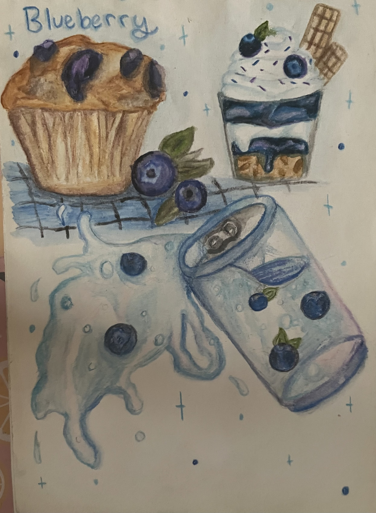
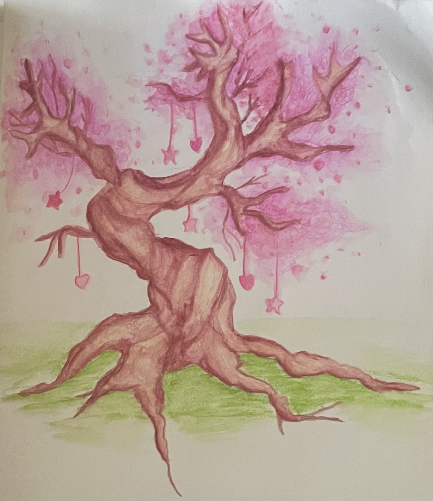
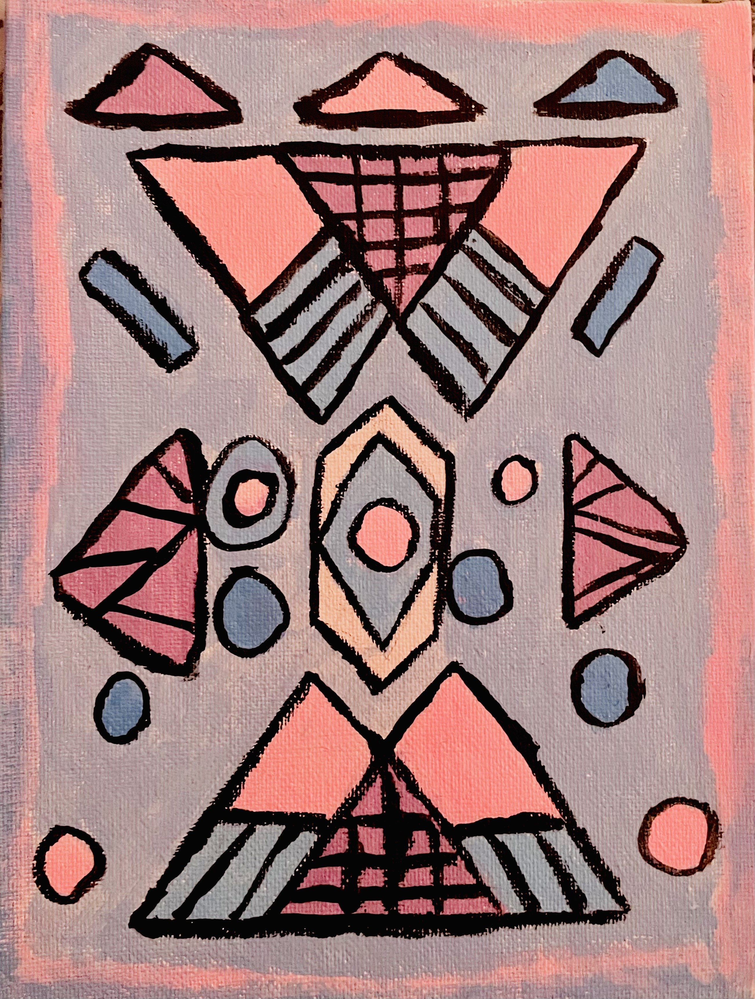

strawberry desserts and drink. i enjoyed drawing fruit desserts and such in highschool. though an old work, it still is one of my best.

like my strawberry watercolor painting, i couldn't come up with a creative title. at the time i was obessed with blueberry desserts and aesthetics, which shows in this painting.

experimental watercolor painting of a imaginary magical blossoming oak tree. i experimented with adding detail to tree barks and roots.

what happens when you reduce something down to its basic shapes and geometry? in an art class, i learned to make an abstract painting and reduced a buttefly into simple shapes, then rearranging it into something interesting. no butterflies were harmed, but the amount of paint i have left was.
© Kimberly Lawson 2026. All Rights Reserved.